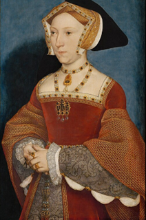
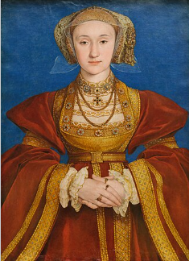
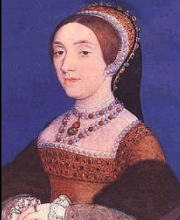

Wives
Throughout his lifetime, Henry VIII had a total of six wives. Each one had their one unique personality and lifestory. Click below to delve into their fascinating backgrounds beyond what is in the timeline page!
Katherine of Aragon - Wife #1

Anne Boleyn - Wife #2

Jane Seymour - Wife #3

Anne of Cleves - Wife #4

Catherine Howard - Wife #5

Katherine Parr - Wife #6